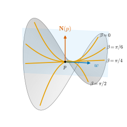
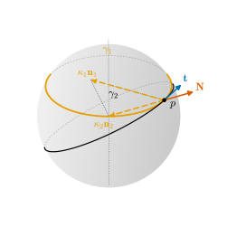

8.2 제2기본형식과 법곡률
이 절의 목표
- 형태작용소로 제2기본형식 \(\mathrm{II}_p\)를 정의하고, 기준 예제에서 계산할 수 있다.
- 곡면 위 곡선의 가속도의 법선 성분이 \(\mathrm{II}_p(\gamma')\)임을 증명하고, 법곡률과 뫼니에 정리를 설명할 수 있다.
- 곡면을 접평면 위의 그래프로 쓰고, 법단면을 정의하며, 법곡률을 법단면의 곡률로 해석할 수 있다.
선수 지식
동기
8.1절에서 곡면이 휘는 정도를 형태작용소 \(W_p = -d\mathbf{N}_p\)라는 선형변환으로 담았다. 이제 이것을 곡면 위의 곡선과 잇는다. 5장은 “곡면 위 곡선의 곡률 가운데 곡면이 휘어서 생기는 몫은 얼마인가?”라는 질문을 남겼다. 곡선의 곡률벡터 \(\gamma'' = \kappa\mathbf{n}\)은 곡면에 대해 법선 성분과 접평면 성분으로 나뉜다. 곡면이 곡선에 강요하는 것은 법선 성분일 것이다. 곡면을 벗어나지 않으려면 곡면이 휘는 만큼 따라 휘어야 하기 때문이다.
구면에서는 답을 이미 보았다. 예 5.3.7(c)에서 \(S^2(r)\) 위의 모든 단위속력 곡선은 \(\inner{\gamma''}{\mathbf{N}} = -1/r\)(바깥쪽 \(\mathbf{N}\))이었다. 곡선마다 곡률은 제각각이지만 법선 성분은 늘 같다. 원기둥에서는 사정이 다르다. 수평 원은 법선 성분이 \(-1/r\)이고 모선은 \(0\)이다. 그러면 무엇이 법선 성분을 정하는가? 이 절의 답은 “접선 방향 하나뿐”이고, 그 값을 주는 것이 \(\inner{W_p(w)}{w}\)다.

제2기본형식
이 절에서도 \(\mathbf{N}\)은 열린집합 \(O \subseteq S\) 위의 단위법벡터장이고, \(W_p\)는 그 \(\mathbf{N}\)에 대한 형태작용소다. 제1기본형식이 \(T_pS\)의 내적 \(\inner{w}{w}\)였듯이, 형태작용소는 이차형식 하나를 준다.
정의 8.2.1 (제2기본형식, second fundamental form). \(p \in O\)에서 이차형식
를 \(\mathbf{N}\)에 대한 \(p\)에서 \(S\)의 제2기본형식(second fundamental form)이라 한다. 대응하는 쌍선형형식 \(\mathrm{II}_p(w_1, w_2) = \inner{W_p(w_1)}{w_2}\)도 같은 이름으로 부른다.
\(W_p\)가 자기수반이므로(정리 8.1.10) \(\mathrm{II}_p(w_1, w_2) = \mathrm{II}_p(w_2, w_1)\)은 대칭이다. 그리고 정의 7.1.1 뒤의 편극 등식과 같은 계산으로 \(\mathrm{II}_p(w_1, w_2) = \tfrac12\big(\mathrm{II}_p(w_1 + w_2) - \mathrm{II}_p(w_1) - \mathrm{II}_p(w_2)\big)\)이므로, 이차형식과 쌍선형형식은 서로를 결정한다. 거꾸로 \(\mathrm{II}_p\)가 \(W_p\)를 결정한다. \(\inner{W_p(w_1)}{w_2}\)를 모든 \(w_2\)에 대해 알면 \(W_p(w_1)\)이 정해지기 때문이다. \(\mathbf{N}\)을 \(-\mathbf{N}\)으로 바꾸면 \(\mathrm{II}_p\)는 \(-\mathrm{II}_p\)가 된다.
예 8.2.2 (기준 예제의 제2기본형식). 예 8.1.13의 형태작용소를 (8.2.1)에 넣는다. \(E, F, G\)는 7장에서 구한 값이다.
- (a) 평면: \(\mathrm{II}_p = 0\).
- (b) 구면(바깥쪽): \(\mathrm{II}_p(w) = \inner{-\tfrac1r w}{w} = -\tfrac1r\abs{w}^2\).
- (c) 원기둥(바깥쪽): \(w = a\,\mathbf{x}_u + b\,\mathbf{x}_v\)이면 \(\mathrm{II}_p(w) = \inner{-\tfrac ar\mathbf{x}_u}{a\,\mathbf{x}_u + b\,\mathbf{x}_v} = -\tfrac{a^2}{r}E - \tfrac{ab}{r}F = -ra^2\)이다(예 7.1.4: \(E = r^2\), \(F = 0\)).
- (d) 안장면의 원점(위쪽): \(\mathrm{II}_0(a\,e_1 + b\,e_2) = \inner{2a\,e_1 - 2b\,e_2}{a\,e_1 + b\,e_2} = 2a^2 - 2b^2\).
- (e) 원환면(\(\mathbf{N}_{\mathbf{x}}\), 안쪽): (8.1.6)과 예 7.1.5의 \(E = r^2\), \(F = 0\), \(G = (R + r\cos u)^2\)에서
- 이다(\(F = 0\)이라 \(ab\) 항이 없다).
이 계수들은 8.5절에서 \(L, M, N\)이라는 이름을 얻는다.
검증: verify/v-8-2-normal-curvature.py
가속도의 법선 성분과 법곡률
곡면 위의 곡선을 따라 가며 법벡터와 속도가 늘 수직이라는 사실을 미분하면, 이 절의 중심 등식이 나온다.
명제 8.2.3 (가속도의 법선 성분). \(\gamma\colon I \to \R^3\)이 매끄러운 곡선이고 값이 \(O\)에 있다고 하자. 모든 \(t \in I\)에서
이다. 매개변수는 호의 길이가 아니어도 된다.
증명 아이디어: \(\inner{\gamma'}{\mathbf{N} \circ \gamma} = 0\)을 미분하면 \(\inner{\gamma''}{\mathbf{N}} = -\inner{\gamma'}{(\mathbf{N} \circ \gamma)'}\)이고, \((\mathbf{N} \circ \gamma)'\)은 정의에 의해 \(d\mathbf{N}(\gamma')\)이다.
증명. \(t_0 \in I\)이고 \(p = \gamma(t_0)\)라 하자. \(s \mapsto \gamma(t_0 + s)\)는 \(p\)를 속도 \(\gamma'(t_0)\)로 지나는 \(S\) 위의 곡선이므로 \(\gamma'(t_0) \in T_pS\)이고(정의 6.2.1), 따라서 모든 \(t\)에서 \(\inner{\gamma'(t)}{\mathbf{N}(\gamma(t))} = 0\)이다. \(\mathbf{N} \circ \gamma\)는 매끄럽다. \(p\) 근처에서 \(\mathbf{x}(U) \subseteq O\)인 매개화를 잡으면 \(t_0\) 근처에서 \(\mathbf{N} \circ \gamma = (\mathbf{N} \circ \mathbf{x}) \circ (\mathbf{x}^{-1} \circ \gamma)\)이고 \(\mathbf{x}^{-1} \circ \gamma\)가 매끄럽기 때문이다(보조정리 6.2.3). 곱의 미분법으로 \(\inner{\gamma''}{\mathbf{N} \circ \gamma} + \inner{\gamma'}{(\mathbf{N} \circ \gamma)'} = 0\)이고, 정의 (6.4.1)에서 \((\mathbf{N} \circ \gamma)'(t_0) = d\mathbf{N}_p(\gamma'(t_0))\)이다. 그러므로
\[ \inner{\gamma''(t_0)}{\mathbf{N}(p)} = -\inner{\gamma'(t_0)}{d\mathbf{N}_p(\gamma'(t_0))} = \inner{W_p(\gamma'(t_0))}{\gamma'(t_0)} = \mathrm{II}_p\big(\gamma'(t_0)\big) \]
이다.
호의 길이로 매개화된 곡선이면 \(\gamma'' = \kappa\mathbf{n}\)이므로 (8.2.3)의 좌변은 곡률벡터의 법선 성분이다. 이것에 이름을 붙인다.
정의 8.2.4 (법곡률, normal curvature). (a) \(\gamma\colon I \to S\)가 호의 길이로 매개화된 정칙곡선이고 값이 \(O\)에 있으면
를 \(\gamma(s)\)에서 \(\gamma\)의 (\(\mathbf{N}\)에 대한) 법곡률(normal curvature)이라 한다. \(\kappa(s) \gt 0\)이고 \(\vartheta(s) \in [0, \pi]\)가 주법선 \(\mathbf{n}(s)\)과 \(\mathbf{N}(\gamma(s))\)가 이루는 각이면 \(\kappa_n = \kappa\inner{\mathbf{n}}{\mathbf{N}} = \kappa\cos\vartheta\)이다. (b) \(p \in O\)이고 \(w \in T_pS\)가 단위벡터이면 \(\kappa_n(w) = \mathrm{II}_p(w)\)를 \(p\)에서 \(w\) 방향의 법곡률이라 한다.
정의에 두 가지가 있다. (a)는 곡선의 양이고 (b)는 곡면과 방향의 양이다. 둘이 같다는 것이 다음 정리다.
정리 8.2.5 (뫼니에 정리, Meusnier's theorem). \(\gamma\colon I \to S\)가 호의 길이로 매개화된 정칙곡선이고 값이 \(O\)에 있으며, \(p = \gamma(s_0)\), \(\mathbf{t} = \gamma'(s_0)\)라 하자.
- (a) \(\kappa_n(s_0) = \kappa_n(\mathbf{t}) = \mathrm{II}_p(\mathbf{t})\)이다. 따라서 \(p\)에서 같은 접선을 갖는 \(S\) 위의 곡선들은 \(p\)에서 법곡률이 모두 같다.
- (b) \(\kappa(s_0) \gt 0\)이면
- 이고, 따라서 \(\kappa(s_0) \ge \abs{\mathrm{II}_p(\mathbf{t})}\)이다. 등호는 \(\mathbf{n}(s_0) = \pm\mathbf{N}(p)\)일 때, 곧 접촉평면이 \(\mathbf{N}(p)\)를 포함할 때 성립한다.
이 정리가 말하는 것. 곡선의 곡률 가운데 곡면이 강요하는 몫(법선 성분)은 곡면과 접선 방향만으로 정해진다. 곡선이 스스로 고를 수 있는 것은 나머지, 곧 접평면 안에서 얼마나 휘는가뿐이다. 5장이 남긴 질문의 답이 \(\mathrm{II}_p(\mathbf{t})\)다.
증명. (a) (8.2.3)에 \(t = s_0\)을 넣으면 \(\kappa_n(s_0) = \mathrm{II}_p(\mathbf{t})\)이다. 같은 접선을 갖는 다른 단위속력 곡선의 \(p\)에서의 속도는 \(\pm\mathbf{t}\)이고, \(\mathrm{II}_p(-\mathbf{t}) = \mathrm{II}_p(\mathbf{t})\)이다(이차형식). (b) \(\gamma'' = \kappa\mathbf{n}\)(정의 5.1.8)이므로 \(\kappa_n = \kappa\inner{\mathbf{n}}{\mathbf{N}} = \kappa\cos\vartheta\)이고 (a)와 합치면 (8.2.5)다. \(\abs{\cos\vartheta} \le 1\)이므로 부등식이 나오고, 등호는 \(\abs{\cos\vartheta} = 1\), 곧 \(\mathbf{n} = \pm\mathbf{N}\)일 때다.
곡선의 방향을 거꾸로 해도 \(\gamma''\)은 그대로이므로 법곡률은 곡선의 방향에 무관하다. 반면 \(\mathbf{N}\)을 \(-\mathbf{N}\)으로 바꾸면 법곡률의 부호가 바뀐다. 호의 길이가 아닌 매개변수에서는 \(\kappa_n = \mathrm{II}(\gamma')/\abs{\gamma'}^2\)이다(연습 8.2.3).
예 8.2.6 (구면 위의 곡선). \(S^2(r)\)에 바깥쪽 \(\mathbf{N}\)을 주면 예 8.2.2(b)에서 모든 단위벡터 \(w\)에 대해 \(\kappa_n(w) = -1/r\)이다. 뫼니에 정리에 의해 구면 위의 모든 곡선은 모든 점에서 법곡률이 \(-1/r\)이다. 예 5.3.7(c)에서 곡선마다 계산했던 사실이 이제 곡면의 성질로 설명된다(그림 8.2.2).
- 여위도 \(\theta_0\)인 위도원은 \(\kappa = 1/(r\sin\theta_0)\)이고 \(\mathbf{n}\)은 \(z\)축 위의 중심을 향한다. 예 5.3.7(a)에서 \(\inner{\mathbf{n}}{\mathbf{N}} = -\sin\theta_0\)이므로 \(\kappa\cos\vartheta = -1/r\)이다.
- 같은 점에서 위도원에 접하는 대원은 \(\kappa = 1/r\), \(\mathbf{n} = -\mathbf{N}\)이므로 \(\kappa\cos\vartheta = -1/r\)이다(예 5.3.7(b)).
두 곡선은 접선이 같고 법곡률도 같다. 위도원은 곡률이 더 크지만 그 초과분은 접평면 안에서 휘는 몫이다. (8.2.5)의 등호가 성립하는 것은 대원 쪽이다.
검증: verify/v-8-2-normal-curvature.py

예 8.2.7 (원기둥 위의 나선). 나선 \(\gamma(t) = (a\cos t, a\sin t, bt)\)는 반지름 \(a\)인 원기둥 위에 있고, 원기둥의 기준 매개화(\(r = a\))로 \(\gamma(t) = \mathbf{x}(t, bt)\)이다. 따라서 \(\gamma'(t) = \mathbf{x}_u + b\,\mathbf{x}_v\)이고, \(c = \sqrt{a^2 + b^2}\)이라 하면 단위접벡터는 \(\mathbf{t} = (\mathbf{x}_u + b\,\mathbf{x}_v)/c\)이다. 예 8.2.2(c)(바깥쪽 \(\mathbf{N}\))에서 \(\mathrm{II}(\mathbf{t}) = -a \cdot (1/c)^2 = -a/(a^2 + b^2)\)이다. 한편 나선의 곡률은 \(\kappa = a/(a^2 + b^2)\)이고 주법선은 수평으로 축을 향하므로(예 5.1.10(b)) \(\mathbf{n} = -\mathbf{N}\), \(\cos\vartheta = -1\)이다. 과연 \(\kappa\cos\vartheta = -a/(a^2 + b^2)\)으로 (8.2.5)와 맞는다. 나선의 곡률은 전부 법선 성분이다. 이 성질은 9장에서 나선이 원기둥의 측지선이라는 사실로 이어진다. 같은 원기둥에서 수평 원(\(b = 0\))의 법곡률은 \(-1/a\), 모선(\(\mathbf{t} = \mathbf{x}_v\))의 법곡률은 \(0\)이다.
검증: verify/v-8-2-normal-curvature.py
접평면 위의 그래프와 법단면
뫼니에 정리에 의하면 \(\mathrm{II}_p(w)\)는 \(w\)에 접하는 아무 곡선으로 계산할 수 있다. 그 가운데 가장 자연스러운 곡선이 그림 8.2.1의 법단면이다. 법단면을 정확히 정의하려면 곡면을 접평면 위의 그래프로 쓰는 것이 편하다.
보조정리 8.2.8 (접평면 위의 그래프). \(S\)가 정칙곡면이고 \(p \in S\), \((e_1, e_2)\)가 \(T_pS\)의 정규직교기저이며 \(e_3 = e_1 \times e_2\)라 하자. 그러면 \(0\)을 포함하는 열린집합 \(\Omega \subseteq \R^2\)와 매끄러운 함수 \(f\colon \Omega \to \R\)가 있어서 \(f(0, 0) = 0\), \(f_\xi(0, 0) = f_\eta(0, 0) = 0\)이고
는 \(S\)의 매개화이고 그 상은 \(p\)의 열린 근방이다. 곧 \(p\) 근처에서 \(S\)는 접평면 위의 그래프이고, \(f\)는 접평면에서 잰 높이다.
증명 아이디어: 명제 6.1.8과 같다. 좌표평면 대신 접평면 위로 사영하면 그 사영의 미분이 \(p\)에서 가역이고, 역함수 정리가 쓰인다.
증명. \(\mathbf{x}\colon U \to S\)가 \(\mathbf{x}(q) = p\)인 매개화라 하고, \(P\colon \R^3 \to \R^2\), \(P(y) = \big(\inner{y - p}{e_1},\ \inner{y - p}{e_2}\big)\)로 두자. \(\Phi = P \circ \mathbf{x}\colon U \to \R^2\)은 매끄럽고 \(\Phi(q) = 0\)이다. \(D\Phi(q)(a, b) = \big(\inner{w}{e_1},\ \inner{w}{e_2}\big)\) (\(w = a\,\mathbf{x}_u + b\,\mathbf{x}_v\))이다. \(D\mathbf{x}(q)\)는 \(\R^2\)에서 \(T_pS\) 위로의 동형사상이고, \(w \mapsto (\inner{w}{e_1}, \inner{w}{e_2})\)는 \(T_pS\)에서 정규직교기저에 대한 성분을 읽는 동형사상이므로(명제 1.5.9), \(D\Phi(q)\)는 가역이다. 역함수 정리(정리 2.3.5)에 의해 \(q\)를 포함하는 열린집합 \(U_0 \subseteq U\)와 \(0\)을 포함하는 열린집합 \(\Omega\)가 있어서 \(\Phi|_{U_0}\colon U_0 \to \Omega\)가 미분동형사상이다.
\(\mathbf{y} = \mathbf{x} \circ (\Phi|_{U_0})^{-1}\colon \Omega \to S\)로 두자. \(\mathbf{y}\)는 매끄럽고, 위상동형사상 두 개의 합성이므로 \(\mathbf{x}(U_0)\) 위로의 위상동형사상이며(\(\mathbf{x}(U_0)\)는 \(S\)에서 열려 있다), \(D\mathbf{y} = D\mathbf{x}\;D(\Phi|_{U_0})^{-1}\)은 단사이다. 따라서 \(\mathbf{y}\)는 매개화다. \(P(\mathbf{y}(\xi, \eta)) = \Phi\big((\Phi|_{U_0})^{-1}(\xi, \eta)\big) = (\xi, \eta)\)이므로, \(\mathbf{y}(\xi, \eta) - p\)를 정규직교기저 \((e_1, e_2, e_3)\)로 전개하면(명제 1.5.9) 처음 두 성분이 \(\xi, \eta\)이고, 셋째 성분 \(f = \inner{\mathbf{y} - p}{e_3}\)는 매끄럽다. 이것이 (8.2.6)이다. \(\mathbf{y}(0, 0) = p\)이므로 \(f(0, 0) = 0\)이다. 또 \(\mathbf{y}_\xi(0, 0) = e_1 + f_\xi(0, 0)\,e_3 \in T_pS\)이고 \(e_3 \perp T_pS\)이므로 \(f_\xi(0, 0) = \inner{\mathbf{y}_\xi(0, 0)}{e_3} = 0\)이다. \(f_\eta\)도 같다.
\(e_3 = e_1 \times e_2\)는 \(p\)에서의 단위법벡터다(정리 1.6.16). 주어진 \(\mathbf{N}\)에 대해 \(e_3 = \mathbf{N}(p)\)가 되게 하려면 필요하면 \(e_2\)를 \(-e_2\)로 바꾸면 된다. 이제 제2기본형식은 높이 \(f\)의 이계도함수로 읽힌다. 두 변수 함수의 이계 편미분이 이루는 대칭행렬 \(\begin{pmatrix} f_{\xi\xi} & f_{\xi\eta} \\ f_{\xi\eta} & f_{\eta\eta} \end{pmatrix}\)을 \(f\)의 헤세 행렬(Hessian matrix)이라 하고, 그것이 정하는 이차형식 \(f_{\xi\xi}a^2 + 2f_{\xi\eta}ab + f_{\eta\eta}b^2\)을 헤세 형식이라 한다. 테일러 전개 (2.2.6)의 2차항이 헤세 형식의 절반이다.
정의 8.2.9 (법단면, normal section). \(p \in S\)이고 \(w \in T_pS\)가 단위벡터라 하자. 보조정리 8.2.8을 \(e_1 = w\)인 정규직교기저로 쓰고, 곡선
\[ \gamma_w(\xi) = \mathbf{y}(\xi, 0) = p + \xi\,w + f(\xi, 0)\,e_3 \qquad \big((\xi, 0) \in \Omega\big) \]
을 \(p\)에서 \(w\) 방향의 \(S\)의 법단면(normal section)이라 한다. 그 자취는 \(\mathbf{y}(\Omega)\)와 법평면 \(p + \Span\{w, e_3\}\)의 교집합이다.
자취에 대한 주장은 \(\mathbf{y}(\xi, \eta)\)가 평면 \(p + \Span\{w, e_3\}\) 위에 있을 필요충분조건이 \(\inner{\mathbf{y} - p}{e_2} = \eta = 0\)이라는 데서 나온다. 곧 법단면은 \(p\) 근처에서 곡면을 \(w\)와 법선이 만드는 평면으로 자른 것이다. \(e_2\)를 \(-e_2\)로 바꾸면 \(e_3\)과 \(f\)의 부호가 바뀔 뿐 자취는 같다. 법단면은 \(\xi\)에 대해 정칙곡선이다(\(\gamma_w' = w + f_\xi e_3 \neq 0\)).
명제 8.2.10 (제2기본형식은 높이의 헤세 형식이다). 보조정리 8.2.8에서 \(e_3 = \mathbf{N}(p)\)라 하자.
- (a) 모든 \(a, b \in \R\)에 대하여
- 이다. 곧 \(e_i\)에 대한 \(W_p\)의 행렬은 \(f\)의 헤세 행렬 \(\begin{pmatrix} f_{\xi\xi} & f_{\xi\eta} \\ f_{\xi\eta} & f_{\eta\eta} \end{pmatrix}(0, 0)\)이다.
- (b) \(e_1 = w\)이면 법단면 \(\gamma_w\)는 \(\gamma_w'(0) = w\), \(\gamma_w''(0) = \kappa_n(w)\,\mathbf{N}(p)\)를 만족한다. 따라서 \(p\)에서 법단면의 곡률은 \(\abs{\kappa_n(w)}\)이고, \(\kappa_n(w) \neq 0\)이면 주법선은 \(\sgn(\kappa_n(w))\,\mathbf{N}(p)\)이다.
증명. (a) 곡선 \(\sigma(t) = \mathbf{y}(ta, tb)\)는 \(S\) 위에 있고, 연쇄법칙으로 \(\sigma'(t) = a\,e_1 + b\,e_2 + (a f_\xi + b f_\eta)\,e_3\), \(\sigma''(t) = (a^2 f_{\xi\xi} + 2ab f_{\xi\eta} + b^2 f_{\eta\eta})\,e_3\)이다(편미분은 \((ta, tb)\)에서, 정리 2.2.14로 \(f_{\xi\eta} = f_{\eta\xi}\)). \(f_\xi(0, 0) = f_\eta(0, 0) = 0\)이므로 \(\sigma'(0) = a\,e_1 + b\,e_2\)이다. 명제 8.2.3에서 \(\mathrm{II}_p(a\,e_1 + b\,e_2) = \inner{\sigma''(0)}{\mathbf{N}(p)} = \inner{\sigma''(0)}{e_3}\)이고, 이것이 (8.2.7)의 우변이다. 행렬에 대한 주장: \(\mathrm{II}_p(e_i, e_j) = \inner{W_p e_i}{e_j}\)이고 \((e_1, e_2)\)는 정규직교이므로 이것이 \(W_p\)의 행렬의 \((j, i)\) 성분이다(명제 1.5.9). 편극 등식으로 (a)에서 \(\mathrm{II}_p(e_1, e_1) = f_{\xi\xi}\), \(\mathrm{II}_p(e_1, e_2) = f_{\xi\eta}\), \(\mathrm{II}_p(e_2, e_2) = f_{\eta\eta}\)(\((0, 0)\)에서)를 읽는다.
(b) \(\gamma_w = \sigma\)(\(a = 1\), \(b = 0\))이므로 \(\gamma_w'(0) = e_1 = w\), \(\gamma_w''(0) = f_{\xi\xi}(0, 0)\,e_3 = \mathrm{II}_p(w)\,\mathbf{N}(p) = \kappa_n(w)\,\mathbf{N}(p)\)이다. \(\gamma_w\)는 단위속력이 아니므로 호의 길이로 재매개화한 \(\beta(s) = \gamma_w(\xi(s))\), \(\xi(0) = 0\)을 보자. \(\xi' = 1/\abs{\gamma_w'(\xi)}\)이고 \(\tfrac{d}{d\xi}\abs{\gamma_w'} = \inner{\gamma_w'}{\gamma_w''}/\abs{\gamma_w'}\)이므로 \(\xi'' = -\inner{\gamma_w'}{\gamma_w''}/\abs{\gamma_w'}^4\)(\(\xi(s)\)에서)이다. \(s = 0\)에서 \(\xi'(0) = 1\), \(\xi''(0) = -\inner{w}{\kappa_n(w)\mathbf{N}(p)} = 0\)이므로 \(\beta''(0) = \gamma_w''(0)\,\xi'(0)^2 + \gamma_w'(0)\,\xi''(0) = \kappa_n(w)\,\mathbf{N}(p)\)이다. 곡률은 \(\abs{\beta''(0)} = \abs{\kappa_n(w)}\)이고(정의 5.1.1), \(\kappa_n(w) \neq 0\)이면 주법선은 \(\beta''(0)/\abs{\beta''(0)} = \sgn(\kappa_n(w))\,\mathbf{N}(p)\)이다(정의 5.1.8).
(b)는 뫼니에 정리의 그림 버전이다. \(w\)에 접하는 모든 곡선 가운데 법단면은 곡률벡터 전체가 법선 방향인 곡선이고, (8.2.5)의 등호가 성립한다. 다른 곡선의 곡률은 \(\kappa = \abs{\kappa_n(w)}/\abs{\cos\vartheta}\)로 더 크다. (a)는 “제2기본형식은 접평면에서 잰 높이의 2차 테일러 계수”라는 뜻이다. 예 2.2.18에서 북극 근처의 구면을 \(z = r - (x^2 + y^2)/(2r) + \cdots\)로 전개한 계수가 바로 이것이고, 8.5절에서 이 관점으로 곡면의 국소 모양을 읽는다.
예 8.2.11 (안장면의 법단면). 안장면의 원점 \(p = 0\)에서 \(T_pS\)는 \(xy\) 평면이고 위쪽 \(\mathbf{N}(p) = e_3\)이다((8.1.1)). \(w = e_1' = (\cos\beta, \sin\beta, 0)\), \(e_2' = (-\sin\beta, \cos\beta, 0)\)으로 두면 \(e_1' \times e_2' = e_3\)이다. 점 \(\xi e_1' + \eta e_2' + z e_3\)의 \(x, y\) 좌표는 \(x = \xi\cos\beta - \eta\sin\beta\), \(y = \xi\sin\beta + \eta\cos\beta\)이므로, 안장면 위의 점은 \(z = x^2 - y^2\)인 점, 곧
\[ f(\xi, \eta) = (\xi\cos\beta - \eta\sin\beta)^2 - (\xi\sin\beta + \eta\cos\beta)^2 = (\xi^2 - \eta^2)\cos 2\beta - 2\xi\eta\sin 2\beta \]
이다. 이 경우에는 \(\Omega = \R^2\)이다. \(f(\xi, 0) = \xi^2\cos 2\beta\)이므로 법단면은 \(\gamma_w(\xi) = (\xi\cos\beta,\ \xi\sin\beta,\ \xi^2\cos 2\beta)\)이고(그림 8.2.1), \(\kappa_n(w) = f_{\xi\xi}(0, 0) = 2\cos 2\beta\)이다. 예 8.2.2(d)의 \(\mathrm{II}_0(\cos\beta\,e_1 + \sin\beta\,e_2) = 2\cos^2\beta - 2\sin^2\beta\)와 같다. \(\beta = \pm\pi/4\)에서는 \(f(\xi, 0) = 0\)이라 법단면이 직선이다. 실제로 \(z = x^2 - y^2 = (x - y)(x + y)\)이므로 두 직선 \(\{x = \pm y,\ z = 0\}\)은 통째로 안장면 위에 있다. 이런 방향은 8.4절에서 점근방향이라는 이름을 얻는다.
검증: verify/v-8-2-normal-curvature.py
요약
- 제2기본형식은 \(\mathrm{II}_p(w) = \inner{W_p(w)}{w}\)다. 대칭 쌍선형형식이지만 내적은 아니며, \(\mathbf{N}\)을 바꾸면 부호가 바뀐다. 원환면(안쪽)에서 \(\mathrm{II}(a\,\mathbf{x}_u + b\,\mathbf{x}_v) = ra^2 + \cos u\,(R + r\cos u)\,b^2\)이다.
- 곡면 위의 어떤 곡선이든 \(\inner{\gamma''}{\mathbf{N}} = \mathrm{II}(\gamma')\)이다(명제 8.2.3). 단위속력이면 좌변이 법곡률 \(\kappa_n = \kappa\cos\vartheta\)다.
- 뫼니에 정리: 법곡률은 접선 방향만으로 정해지고 \(\kappa\cos\vartheta = \mathrm{II}_p(\mathbf{t})\)이다. 구면(바깥쪽)은 모든 방향에서 \(-1/r\), 원기둥 위의 나선은 \(-a/(a^2 + b^2)\)이다.
- 곡면은 한 점 근처에서 접평면 위의 그래프 \(p + \xi e_1 + \eta e_2 + f e_3\)이고, \(\mathrm{II}_p\)는 높이 \(f\)의 헤세 형식이다. 법단면의 곡률벡터는 \(\kappa_n(w)\mathbf{N}(p)\)이다.
다음 절에서는 한 점에서 방향 \(w\)를 돌릴 때 \(\kappa_n(w)\)가 어떻게 변하는지 묻는다. 안장면에서는 \(2\cos 2\beta\)로 최댓값과 최솟값이 직교하는 두 방향에서 나왔다. 이것은 일반적인 사실이고, 그 두 방향이 \(W_p\)의 고유벡터다.
연습문제
연습 8.2.1 ★ 원환면(\(\mathbf{N}_{\mathbf{x}}\), 안쪽)의 점 \(p = \mathbf{x}(u, v)\)에서 세 단위벡터 \(e_1 = \mathbf{x}_u/r\), \(e_2 = \mathbf{x}_v/(R + r\cos u)\), \((e_1 + e_2)/\sqrt2\) 방향의 법곡률을 구하여라. \(u = \pi/2\)(원환면의 맨 위 원)에서 법곡률이 \(0\)인 방향을 모두 구하여라.
풀이
(8.2.2)에 넣는다. \(e_1\): \((a, b) = (1/r, 0)\)이므로 \(\kappa_n = r/r^2 = 1/r\). \(e_2\): \((a, b) = (0, 1/(R + r\cos u))\)이므로 \(\kappa_n = \cos u\,(R + r\cos u)/(R + r\cos u)^2 = \cos u/(R + r\cos u)\). \((e_1 + e_2)/\sqrt2\): \(F = 0\)이라 교차항이 없으므로 \(\kappa_n = \tfrac12\big(1/r + \cos u/(R + r\cos u)\big)\)이다.
\(u = \pi/2\)이면 단위벡터 \(w = \cos\beta\,e_1 + \sin\beta\,e_2\)에 대해 \(\kappa_n(w) = \cos^2\beta/r + 0\)이므로 \(\kappa_n = 0\)인 방향은 \(\beta = \pm\pi/2\), 곧 \(\pm e_2\)(위도원 방향)뿐이다. 맨 위 원은 \(\mathbf{N}_{\mathbf{x}} = -e_3\)에 수직인 수평 원이므로 그 법단면은 원 자신이 아니라, 원에 접하는 수직 평면으로 자른 곡선이다.
검증: verify/v-8-2-normal-curvature.py
연습 8.2.2 ★ 참인지 거짓인지 판별하고 이유를 대어라. (a) 법곡률이 늘 \(0\)인 곡면 위의 곡선은 직선이다. (b) 곡면 위 곡선의 곡률은 그 점, 그 접선 방향의 \(\abs{\kappa_n}\) 이상이다. (c) \(\mathbf{N}\)을 \(-\mathbf{N}\)으로 바꾸면 모든 법곡률의 부호가 바뀐다. (d) 곡선의 방향을 거꾸로 하면 법곡률의 부호가 바뀐다.
풀이
(a) 거짓. 평면 위의 원은 \(\gamma'' \perp \mathbf{N}\)이라 법곡률이 \(0\)이지만 직선이 아니다.
(b) 참. 정리 8.2.5(b)에서 \(\kappa \ge \abs{\kappa\cos\vartheta} = \abs{\kappa_n}\)이다. \(\kappa = 0\)이면 \(\gamma'' = 0\)이라 \(\kappa_n = 0\)이다.
(c) 참. (8.2.4)는 \(\mathbf{N}\)에 대해 선형이다.
(d) 거짓. \(\bar\gamma(s) = \gamma(-s)\)이면 \(\bar\gamma''(s) = \gamma''(-s)\)이다.
연습 8.2.3 ★ \(\gamma\colon I \to O\)가 정칙곡선(매개변수는 아무것이나)이면 \(\gamma(t)\)에서의 법곡률(호의 길이로 재매개화한 곡선의 법곡률)은 \(\mathrm{II}(\gamma'(t))/\abs{\gamma'(t)}^2\)임을 보여라. 이 식으로 나선 \(\gamma(t) = (a\cos t, a\sin t, bt)\)의 법곡률을 다시 구하여라.
풀이
호의 길이 재매개화 \(\beta(s) = \gamma(t(s))\)에서 \(\beta'(s) = \gamma'(t)/\abs{\gamma'(t)}\)이므로 \(\kappa_n = \mathrm{II}(\beta') = \mathrm{II}(\gamma')/\abs{\gamma'}^2\)이다(\(\mathrm{II}\)는 이차형식이고 정리 8.2.5(a)). 명제 8.2.3을 쓰면 \(\kappa_n = \inner{\gamma''}{\mathbf{N}}/\abs{\gamma'}^2\)이라고도 쓸 수 있다. 나선은 \(\gamma' = \mathbf{x}_u + b\,\mathbf{x}_v\)이므로 예 8.2.2(c)(\(r = a\))에서 \(\mathrm{II}(\gamma') = -a\)이고 \(\abs{\gamma'}^2 = a^2 + b^2\)이다. 따라서 \(\kappa_n = -a/(a^2 + b^2)\)로 예 8.2.7과 같다. 직접 확인하면 \(\gamma'' = (-a\cos t, -a\sin t, 0)\)이고 \(\mathbf{N} = (\cos t, \sin t, 0)\)이므로 \(\inner{\gamma''}{\mathbf{N}} = -a\)이다.
검증: verify/v-8-2-normal-curvature.py
연습 8.2.4 ★ 연습 5.1.3의 부등식 “구면 \(S^2(r)\) 위 곡선의 곡률은 \(1/r\) 이상”을 뫼니에 정리로 다시 얻어라. 어떤 점에서 등호가 성립할 필요충분조건이 그 점에서 접촉평면이 구의 중심을 지나는 것임을 보여라.
풀이
바깥쪽 \(\mathbf{N}\)에 대해 모든 방향의 법곡률은 \(-1/r\)이다(예 8.2.6). 정리 8.2.5(b)에서 \(\kappa \ge \abs{\kappa_n} = 1/r\)이다. (\(\kappa = 0\)인 점이 있다면 그 점에서 \(\gamma'' = 0\)이라 \(\kappa_n = 0\)이 되어 모순이므로, 늘 \(\kappa \gt 0\)이고 정리 8.2.5(b)를 쓸 수 있다.) 등호는 \(\mathbf{n} = \pm\mathbf{N}(p) = \pm p/r\)일 때다. 접촉평면은 \(p + \Span\{\mathbf{t}, \mathbf{n}\}\)이므로, \(\mathbf{n} \parallel p\)이면 \(p \in \Span\{\mathbf{t}, \mathbf{n}\}\)이고 \(0 = p - p\)가 그 평면 위에 있다. 거꾸로 중심 \(0\)이 접촉평면 \(p + \Span\{\mathbf{t}, \mathbf{n}\}\) 위에 있으면 \(p \in \Span\{\mathbf{t}, \mathbf{n}\}\)이고 \(p \perp \mathbf{t}\)이므로 \(p \parallel \mathbf{n}\)이다. (\(\kappa\cos\vartheta = -1/r \lt 0\)이므로 등호일 때 \(\mathbf{n} = -\mathbf{N}\), 곡률중심이 구의 중심이다.)
연습 8.2.5 ★★ 원기둥 \(C_r\)의 점 \(p = (r, 0, 0)\)에서 단위벡터 \(w = (0, \cos\beta, \sin\beta)\) (\(\cos\beta \neq 0\)) 방향의 법단면이 타원의 일부임을 보이고 반축의 길이를 구하여라. 타원의 꼭짓점에서의 곡률 공식으로 법단면의 \(p\)에서의 곡률을 구해 \(\abs{\kappa_n(w)}\)와 비교하여라.
힌트
법평면의 점을 \(p + s\,w + t\,e_1\)로 쓰고 \(x^2 + y^2 = r^2\)에 넣는다. 반축이 \(A\), \(B\)인 타원의 \(B\)축 끝점에서의 곡률은 \(B/A^2\)이다.
풀이
바깥쪽 \(\mathbf{N}(p) = e_1\)이고 \(w \in T_pC_r = \Span\{e_2, e_3\}\)이다. 법평면 \(p + \Span\{w, e_1\}\)의 점 \(p + s\,w + t\,e_1 = (r + t,\ s\cos\beta,\ s\sin\beta)\)가 원기둥 위에 있을 조건은 \((r + t)^2 + s^2\cos^2\beta = r^2\), 곧
\[ \frac{(t + r)^2}{r^2} + \frac{s^2}{(r/\abs{\cos\beta})^2} = 1 \]
이다. \((s, t)\) 평면에서 중심 \((0, -r)\), \(s\) 방향 반축 \(A = r/\abs{\cos\beta}\), \(t\) 방향 반축 \(B = r\)인 타원이고, \(p\)는 \((s, t) = (0, 0)\), 곧 \(B\)축의 끝점이다. 그 점에서 타원의 곡률은 \(B/A^2 = r\cos^2\beta/r^2 = \cos^2\beta/r\)이다. (타원 \((A\cos\tau, B\sin\tau)\)를 명제 4.4.5에 넣으면 \(\tau = \pi/2\)에서 \(\abs{\kappa_s} = AB/A^3 = B/A^2\)이다.)
한편 \(w = \cos\beta\,(\mathbf{x}_u/r) + \sin\beta\,\mathbf{x}_v\)(\(p = \mathbf{x}(0, 0)\), \(\mathbf{x}_u = (0, r, 0)\))이므로 예 8.2.2(c)에서 \(\kappa_n(w) = -r(\cos\beta/r)^2 = -\cos^2\beta/r\)이다. 명제 8.2.10(b)대로 곡률은 \(\abs{\kappa_n(w)}\)과 같다. 법단면은 \(\beta = 0\)이면 수평 원, \(\beta \to \pm\pi/2\)이면 점점 길쭉한 타원이 되어 모선(직선)에 가까워진다.
검증: verify/v-8-2-normal-curvature.py
연습 8.2.6 ★★ \(p \in S\), 단위벡터 \(\mathbf{t} \in T_pS\)이고 \(\kappa_n(\mathbf{t}) \neq 0\)이라 하자. \(p\)를 속도 \(\mathbf{t}\)로 지나고 \(p\)에서 곡률이 양수인 \(S\) 위의 단위속력 곡선들의 곡률중심 \(c = p + \mathbf{n}/\kappa\)(정의 5.1.12)은 모두 \(\mathbf{t}\)에 수직인 평면 안의 한 원 위에 있음을 보여라. 그 원의 중심과 반지름을 구하여라.
힌트
\(\mathbf{n} = \cos\vartheta\,\mathbf{N} + \sin\vartheta\,\mathbf{m}\)(\(\mathbf{m} = \pm\mathbf{N} \times \mathbf{t}\))로 쓰고 \(\kappa = \kappa_n/\cos\vartheta\)를 쓴다.
풀이
\(\mathbf{n} \perp \mathbf{t}\)이므로 \(\mathbf{n}\)은 \(\mathbf{t}^\perp = \Span\{\mathbf{N}(p),\ \mathbf{m}\}\)(\(\mathbf{m} = \mathbf{N}(p) \times \mathbf{t}\)) 안의 단위벡터이고, \(\inner{\mathbf{n}}{\mathbf{N}} = \cos\vartheta\)이므로 \(\mathbf{n} = \cos\vartheta\,\mathbf{N} + \epsilon\sin\vartheta\,\mathbf{m}\)(\(\epsilon = \pm 1\))으로 쓸 수 있다. 뫼니에 정리에서 \(\kappa\cos\vartheta = \kappa_n\)이고 \(\kappa_n \neq 0\)이므로 \(\cos\vartheta \neq 0\), \(1/\kappa = \cos\vartheta/\kappa_n\)이다. 따라서
\[ c - p = \frac{\cos\vartheta}{\kappa_n}\big(\cos\vartheta\,\mathbf{N} + \epsilon\sin\vartheta\,\mathbf{m}\big) = \frac{1}{2\kappa_n}\mathbf{N} + \frac{1}{2\kappa_n}\big(\cos 2\vartheta\,\mathbf{N} + \epsilon\sin 2\vartheta\,\mathbf{m}\big) \]
이다(\(2\cos^2\vartheta = 1 + \cos 2\vartheta\), \(2\cos\vartheta\sin\vartheta = \sin 2\vartheta\)). 괄호 안은 단위벡터이므로 \(\abs{c - (p + \mathbf{N}/(2\kappa_n))} = 1/(2\abs{\kappa_n})\)이다. 곧 곡률중심은 \(p\)를 지나고 \(\mathbf{t}\)에 수직인 평면 안에서 중심 \(p + \mathbf{N}(p)/(2\kappa_n)\), 반지름 \(1/(2\abs{\kappa_n})\)인 원 위에 있다. 이 원은 \(p\)와 법단면의 곡률중심 \(p + \mathbf{N}/\kappa_n\)을 지름의 양 끝으로 갖는다.
검증: verify/v-8-2-normal-curvature.py